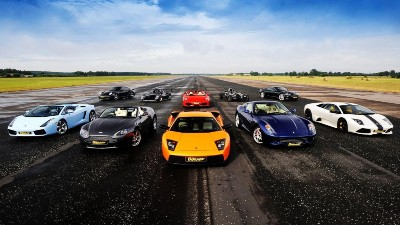
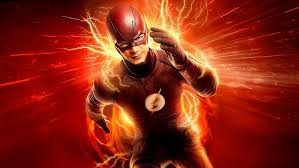
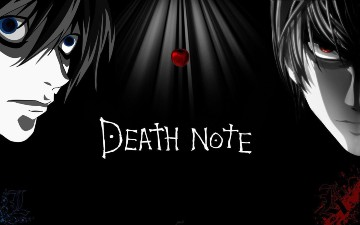
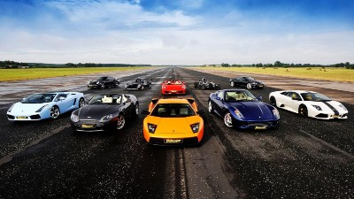
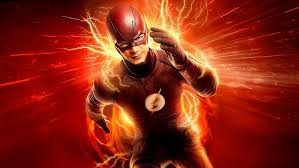
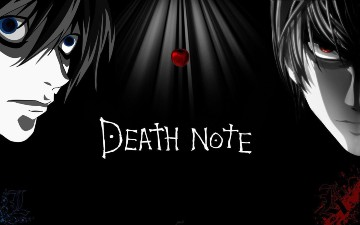

|
| Some of my hobbies and interests include chess, skiing, super/luxury cars, superheroes, anime and more. I play chess a lot because it is very peaceful.
 In chess I like to think that I am good but every time I play against my brothers I always lose.
I like chess because it makes me think a lot of steps ahead and it is calming. Chess is a thinking game, and it is a very strategic game.
The greatest chess player in the world is Magnus Carlsen and one day I hope to play him and win (but i will probably lose).
Every winter my family and I would head up to blue mountain with our skis and we would spend a night at the cabin and spend the whole day skiing, chair lifts and crashes.
When we first started skiing, we would crash with everybody and go very slow, but people would never get mad they would just smile and help us.
Every time I go skiing my mind would be clear and it would be so peaceful skiing down the mountain. Skiing is very fun, and it is the perfect winter sport with speed, snow, and adrenaline rushes.
I like super cars because they look very luxurious and the engine is very loud.
When the cars go 240km/hr they look so awesome and when is dark outside the lights shine so bright.
The pictures of some of these cars like Rolls Royce’s and Aston Martin are very fascinating.
My dream car is a Rolls Royce because it is very big and inside the car the roof is like a starry night.
Another one of my interests are heroes such as superman, the flash, shazam and Aquaman. I like superman because he is overpowered and only has 1 weakness.
I am a huge fan of the flash because I think his powers are very special and I think he is very special to have those capabilities.
His powers come from a place called the speed force which is an energy giving powers to people.
Shazam is very childish but his abilities are extraordinary, and it is only given to people with pure souls.
I watch Superheroes TV shows in my free time. I also watch other TV shows and I watch a lot of Anime such as One Punch Man, Death Note and My Hero Academia.
I like death note because it is very intellectual and a smart tv show to keep track of.
One Punch man is very funny, and it is very inspirational. In chess I like to think that I am good but every time I play against my brothers I always lose.
I like chess because it makes me think a lot of steps ahead and it is calming. Chess is a thinking game, and it is a very strategic game.
The greatest chess player in the world is Magnus Carlsen and one day I hope to play him and win (but i will probably lose).
Every winter my family and I would head up to blue mountain with our skis and we would spend a night at the cabin and spend the whole day skiing, chair lifts and crashes.
When we first started skiing, we would crash with everybody and go very slow, but people would never get mad they would just smile and help us.
Every time I go skiing my mind would be clear and it would be so peaceful skiing down the mountain. Skiing is very fun, and it is the perfect winter sport with speed, snow, and adrenaline rushes.
I like super cars because they look very luxurious and the engine is very loud.
When the cars go 240km/hr they look so awesome and when is dark outside the lights shine so bright.
The pictures of some of these cars like Rolls Royce’s and Aston Martin are very fascinating.
My dream car is a Rolls Royce because it is very big and inside the car the roof is like a starry night.
Another one of my interests are heroes such as superman, the flash, shazam and Aquaman. I like superman because he is overpowered and only has 1 weakness.
I am a huge fan of the flash because I think his powers are very special and I think he is very special to have those capabilities.
His powers come from a place called the speed force which is an energy giving powers to people.
Shazam is very childish but his abilities are extraordinary, and it is only given to people with pure souls.
I watch Superheroes TV shows in my free time. I also watch other TV shows and I watch a lot of Anime such as One Punch Man, Death Note and My Hero Academia.
I like death note because it is very intellectual and a smart tv show to keep track of.
One Punch man is very funny, and it is very inspirational. |